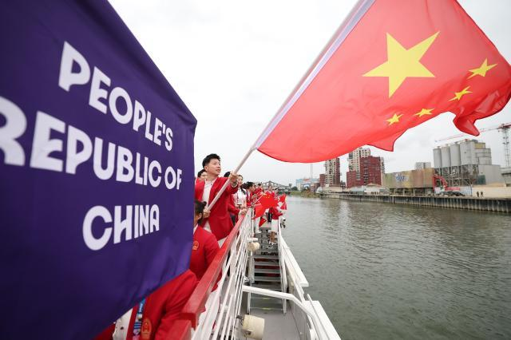
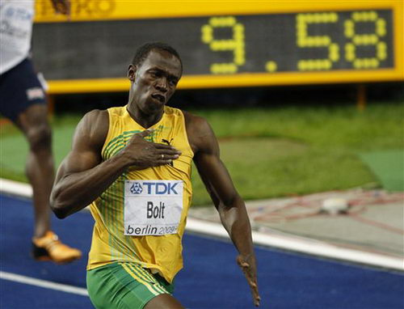
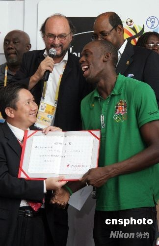
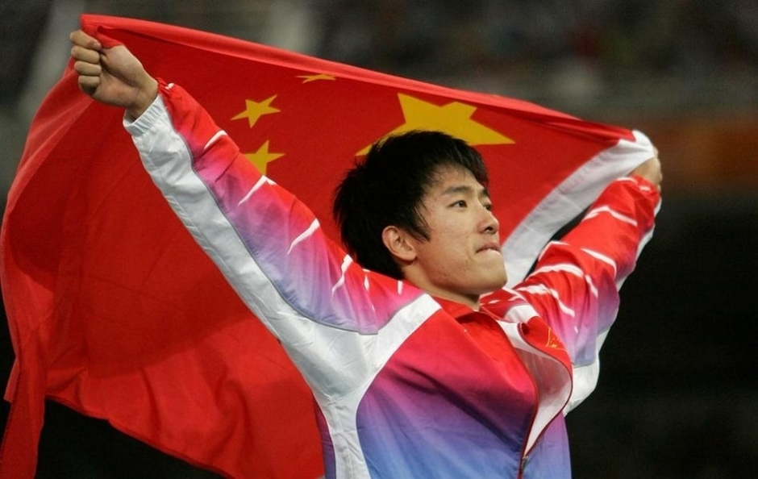
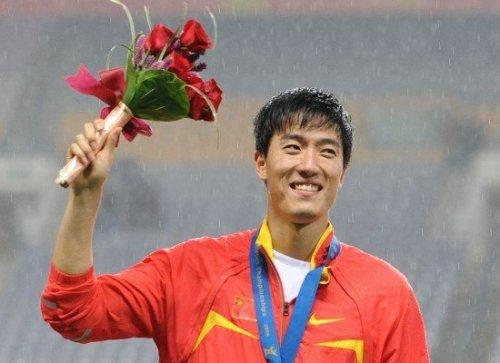

"Faster Higher Stronger"

"马龙"
2016年里约奥运会,夺得男单、男团冠军。
2021年东京奥运会,乒乓球男单、男团冠军。
2024巴黎奥运会,乒乓球男子团体冠军，成为中国首位六金得主。

"六边形战士"
媒体眼中的全能王
大满贯选手

"旗手"
中国体育的代言人
乒乓球界的传奇人物

"博尔特"
100米9.58s最快记录保持者
2008年北京奥运会男子100米冠军、男子200米冠军
2012年伦敦奥运会男子100米冠军、男子200米冠军、男子4×100米接力冠军
2016年里约奥运会男子100米冠军、男子200米冠军、男子4×100米接力冠军

"短跑之神"
世界记录保持者
人类极限

"慈善家"
为汶川地震捐款
英超慈善赛

"刘翔"
2004年雅典奥运会男子110米栏决赛冠军
12秒91打破奥运会纪录

"亚洲飞人"
中国田径的第一个冠军
多次打破世界记录

"爱心大使"
为汶川地震捐款
公益形象大使